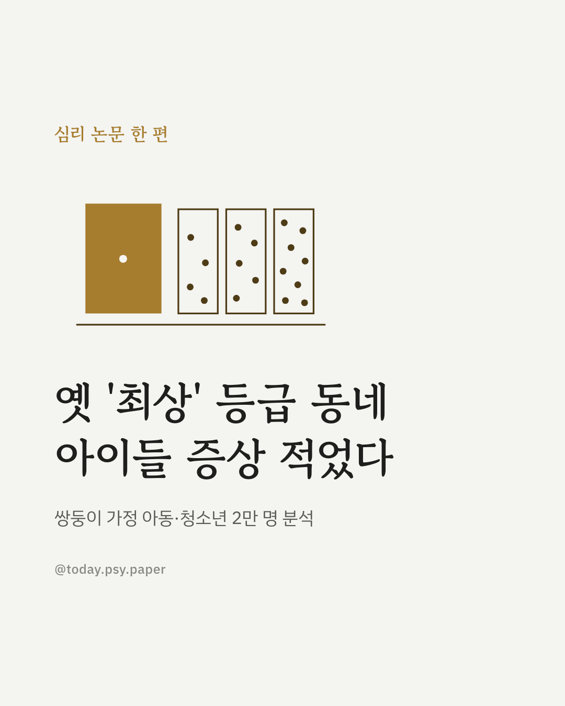
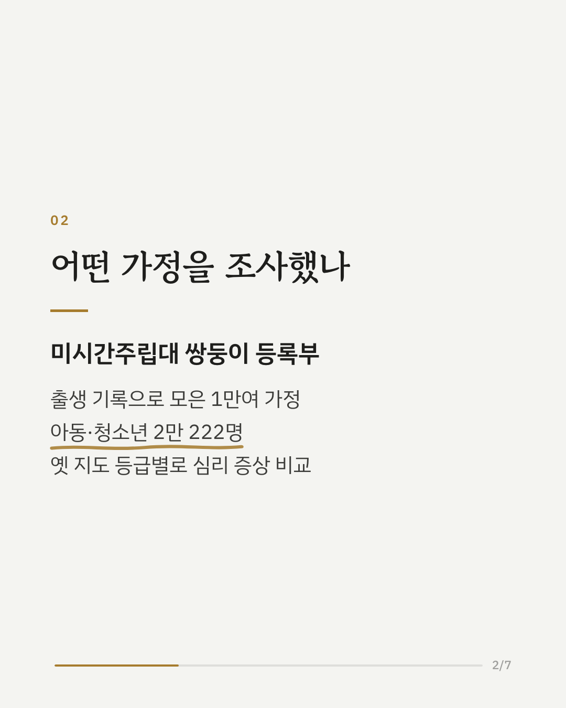
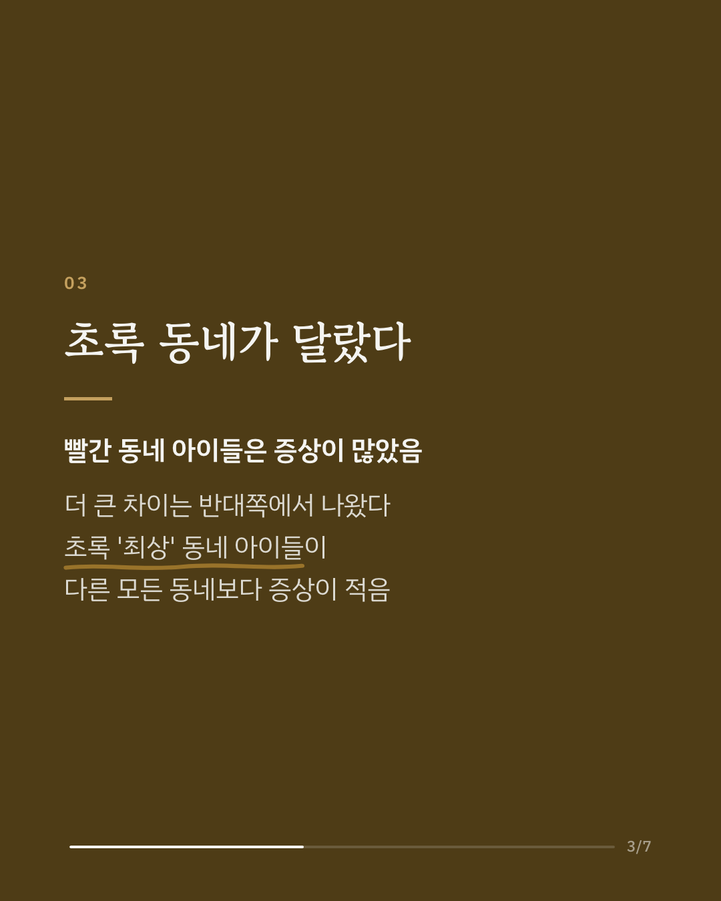
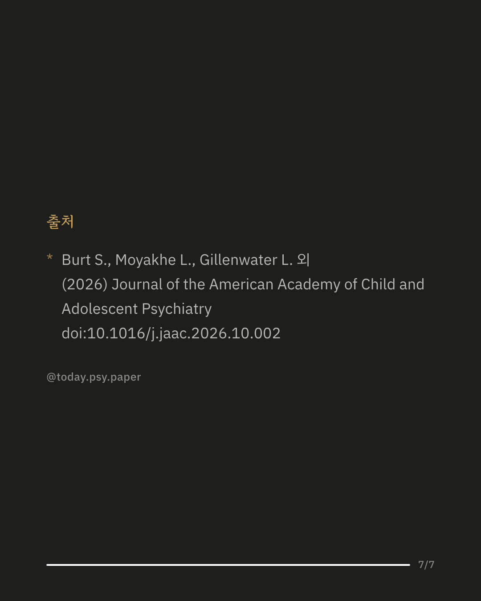

1930년대 미국은 주택 대출 위험도를 기준으로 동네를 네 등급으로 나눈 지도를 만들었습니다. 이 연구는 그 지도가 90년이 지난 지금 아동·청소년의 정신건강과도 관련이 있는지 살폈습니다. 미시간주립대 쌍둥이 등록부에 출생 기록으로 모집된 1만여 가정, 아동·청소년 2만 222명을 분석했습니다. 예상대로 옛 '위험'(빨간) 등급 동네에 사는 아이들은 증상이 더 많았습니다. 그런데 가장 뚜렷하고 일관된 차이는 반대쪽에 있었습니다. 옛 '최상'(초록) 등급 동네 아이들의 정신건강이 다른 어느 동네보다 좋았고, 이 차이는 동네와 가정의 소득 수준을 고려해도 사라지지 않았습니다. 연구진은 옛 대출 지도가 불리함뿐 아니라 이점도 오래 굳혀 왔을 수 있다고 봅니다. 다만 미시간주 쌍둥이 가정만 대상이었고, 어떤 경로로 이런 차이가 이어지는지는 아직 밝혀지지 않았습니다. Journal of the American Academy of Child and Adolescent Psychiatry (2026), 'Mortgage Lending Risk Maps From the 1930s Influence the Prevalence of Youth Mental Health Problems in the Modern Era' DOI: 10.1016/j.jaac.2026.10.002 #임상심리 #정신건강정보 #심리학연구 #논문리뷰 #청소년정신건강 #아동심리 #레드라이닝 #사회불평등
python3 publish.py 42855041